Hackintosh (Monterey) com Proxmox
Introdução
Quando se fala em tecnologia Apple, especialmente no território nacional, soa como algo mágico: Algo que vai além de um computador pois a maioria das pessoas que tiveram contato com computadores nunca sequer tocaram um hardware da Apple na vida e, grande parte das que tiveram um desses tratam como uma espécie de expressão da condição social. Como você que acompanha as minhas documentações bem sabe, aqui temos interesse em acesso a tecnologia sem distinção social (a menos que você tenha um Amiga500 com Vampire ou um Galaxy Book Go rodando Gentoo, nesse caso aí é full master race mesmo) e testar o MacOS num computador não Apple não é nenhuma vaca sagrada por aqui. Essa documentação será uma documentação de exemplo de como fazer um Hackintosh utilizando o Proxmox e virtualização, embora no tutorial do Hackintosh Old Way eu parafraseei o grande Isaque de Hermanoteu na Terra de Godah com o "Cuidado rapaz, a barra aqui é pesadaa!" o caso pra um Hackintosh com virtualização é bem de boa e com um conhecimento básico de Linux e gerenciamento vm's você vai dar conta (embora possa ser até mais demorado).
Se leitura de documentação em inglês, diagnóstico de hardware e gerenciamento de arquivos de configuração é algo complicado pra você... Pode continuar tranquilo pois você quase não vai precisar mesmo 😂 essa maneira é muito tranquila de ser instalada.
Embora essa instalação seja bem mais tranquila ela também performa menos, mas se você só quer utilizar MacOS sem muita dor de cabeça isso vai te servir.
Essa documentação foi feita presumindo que você já leu a documentação da instalação do Proxmox, já o instalou na máquina servidor e que já saiba um mínimo do gerenciamento de vm's. Caso não tenha lido acesse esse link aqui para ler.
Requisitos Recomendados
- 2 computadores, sendo um servidor (que vai rodar a virtualização) e o guest (para configuração via rede), ambos obviamente rodando na mesma rede
- Uma máquina com pelo menos 8GB de RAM
- Uma placa de vídeo compatível com o MacOS (para saída de vídeo local)
- Preparar um disco completo para a instalação do Proxmox (partição não serve)
- Uma placa de vídeo dedicada compatível com o MacOS (caso queira rodar o sistema na mesma máquina em que virtualização será instalada)
Preparando a instalação do Proxmox
É importante dizer que esse conteúdo foi feito usando de referência o canal Dicas do Mateus e o The Ultimate Beginner's Guide to GPU Passthrough.
Primeiramente baixe o Proxmox nesse link aqui, recomendo a versão mais recente do Proxmox VE ISO Installer (BitTorrent), que no meu caso é a 7.2 e faça a instalação do Proxmox na máquina que virtualizará o Mac.
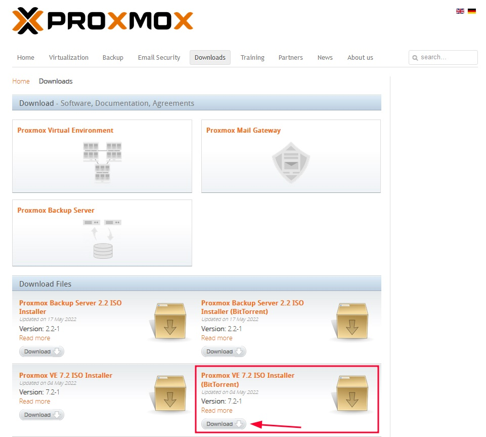Baixe a última versão do KVM-Opencore .ISO aqui.
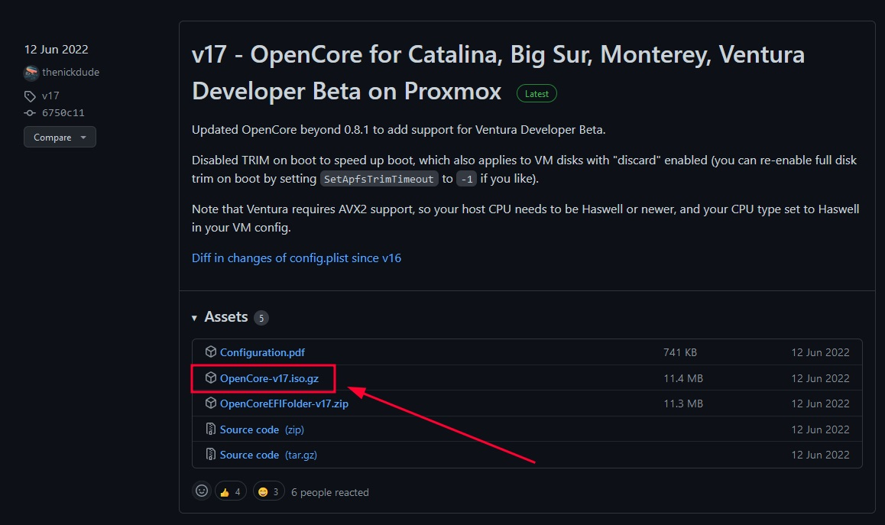Baixe a .ISO do MacOS Monterey aqui (upload pelo canal Dicas do Mateus).
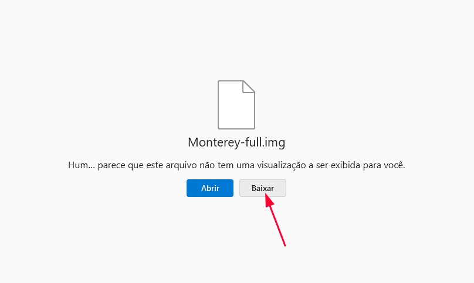Acesse a interface do servidor através de um navegador e faça o upload de ambos arquivos de .ISO para a partição Datacenter > PVE > Local no Proxmox.

Criando a VM
Assim que terminar o upload de ambos os arquivos vá em Server View no lado esquerdo da tela selecione em Datacenter > PVE e no canto superior direito selecione a opção Create VM.


Essa máquina virtual deve seguir as configurações abaixo.
Na guia General marque a opção Advanced e configure:
- Name: macOS Monterey
Na guia OS:
- Use CD/DVD disc image file (iso):
- Storage: local
- ISO Image: OpenCore-v-XX.iso
- Guest OS:
- Type: Other
Na guia System:
- Graphic Card: VMware Compatible
- SCSI Controller: VirtIO SCSI
- BIOS: OVMF (UEFI)
- Machine: q35
- Storage: local-lvm
Na guia Hard Disk:
- Bus/Device: VirtIO Block
- Storage: local-lvm
- Disk Size (GiB): 64 (pelo menos)
- Cache: Write back (unsafe)
Na guia CPU:
- Cores: 4
- Type: Penryn

Na guia Memory:
- Memory (MiB: 4096 (pelo menos)
Na guia Network:
- Model: VMware vmxnet3
E na guia Confirm apenas selecione Finish.
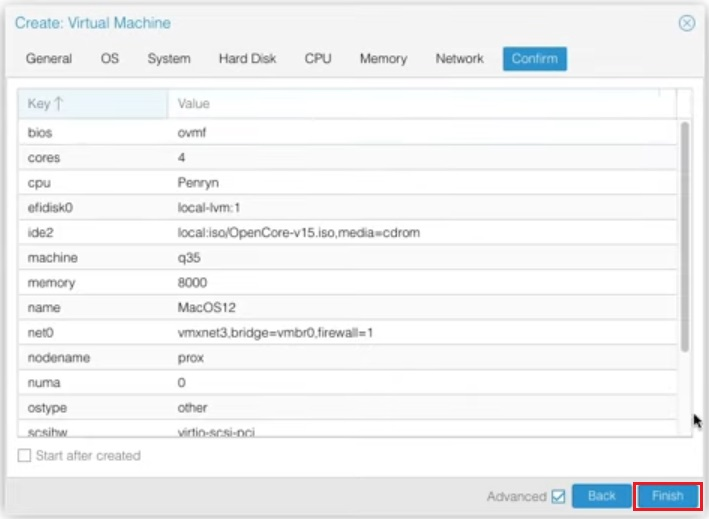Configurando a VM
Com a máquina virtual criada e com uma mídia de boot selecionada (OpenCore-v-XX.iso), agora devemos adicionar um drive virtual nela contendo a imagem do MacOS. Para isso no Server View a esquerda selecione Datacenter > PVE > macOS Monterey, e nas opções da máquina virtual selecione Hardware > Add > CD/DVD Drive.

Agora selecionaremos a iso de instalação:
Marque Use CD/DVD disc image file (.iso) e configure:
- Storage: local
- ISO Image: Monterey-full.img
Depois clique em Create
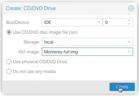Com a máquina virtual criada precisamos agora alterar a ordem de boot, para isso acesse Datacenter > PVE > macOS Monterey na guia de opções selecione Options e depois dê dois cliques em Boot Order.

E depois clique e arraste o IDE2 para o primeiro item de boot.
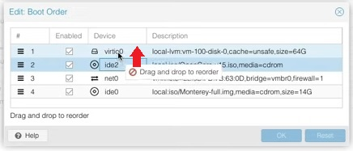Como na figura abaixo:
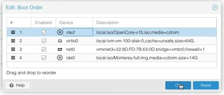Agora precisamos fazer algumas alterações no Shell, para isso selecione Datacenter > PVE > Shell
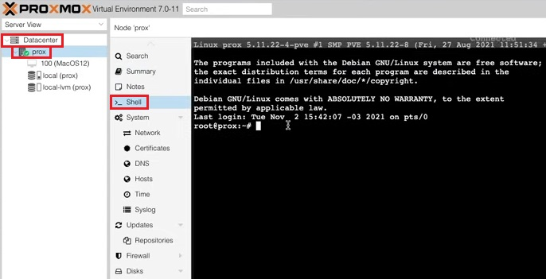Primeiramente você precisa editar o arquivo de configuração da vm com o nano (ou o seu editor preferido), para isso utilize o comando:
nano /etc/pve/qemu-server/100.conf
ps: Considerando que a sua VM possui a ID 100, caso você tenha alterado o ID da máquina virtual, altere o nome do arquivo .conf também para:
número da id de vm que você escolheu.conf
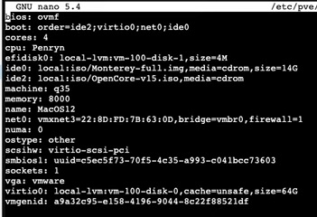
Na linha de configuração da .IMG de instalação do MacOS (Monterey-full.img) altere de:
ide0: local:iso/Monterey-full.img,media=cdrom,size=14G
Para:
ide0: local:iso/Monterey-full.img,cache=unsafe,size=14G
E na linha de configuração da .ISO do KVM-Opencore (OpenCore-vXX.iso) altere de:
ide2: local:iso/OpenCore-vXX.iso,media=cdrom
Para:
ide2: local:iso/OpenCore-vXX.iso,cache=unsafe
Por fim você precisa adicionar uma última linha de argumentos ao final desse arquivo de texto, mas qual linha você deve utilizar depende de qual é o processador da máquina em que o Proxmox está instalado.
Caso você tenha uma plataforma Intel:
args: -device isa-applesmc,osk="ourhardworkbythesewordsguardedpleasedontsteal(c)AppleComputerInc" -smbios type=2 -device usb-kbd,bus=ehci.0,port=2 -global nec-usb-xhci.msi=off -cpu host,kvm=on,vendor=GenuineIntel,+kvm_pv_unhalt,+kvm_pv_eoi,+hypervisor,+invtsc
Caso você tenha uma plataforma AMD:
args: -device isa-applesmc,osk="ourhardworkbythesewordsguardedpleasedontsteal(c)AppleComputerInc" -smbios type=2 -device usb-kbd,bus=ehci.0,port=2 -global nec-usb-xhci.msi=off -cpu Penryn,kvm=on,vendor=GenuineIntel,+kvm_pv_unhalt,+kvm_pv_eoi,+hypervisor,+invtsc,+pcid,+ssse3,+sse4.2,+popcnt,+avx,+avx2,+aes,+fma,+fma4,+bmi1,+bmi2,+xsave,+xsaveopt,check
E o seu arquivo de configuração deve ficar mais ou menos assim:
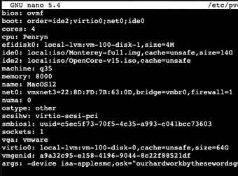Depois que finalizar a edição use o comando Control + x para sair do nano, ele vai perguntar se você deseja salvar (Save modified buffer?) , digite Y para Yes e depois tecle Enter para confirmar a sobrescrição do arquivo, o shell vai retornar ao seu ponto inicial.

Com tudo configurado agora basta iniciar a vm clicando em Start e depois Console e você terá acesso ao sistema virtualizado.

Selecione então a opção Install macOS Monterey e prossiga com a instalação, se você nunca instalou o macOS antes você pode seguir como referência essa documentação aqui (siga do Iniciando a Instalação até o Configuração inicial do sistema)
Mas lembre-se que o dispositivo a ser apagado para instalação do sistema dentro da vm vai ser o disco Apple Inc. VirtIO Block Media, como na segunda imagem abaixo
ps: Sim, o começo da instalação demora bastante na vm...
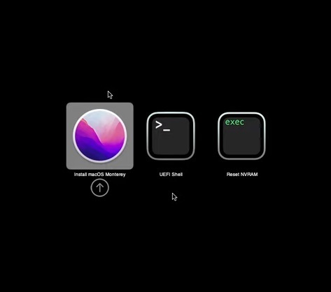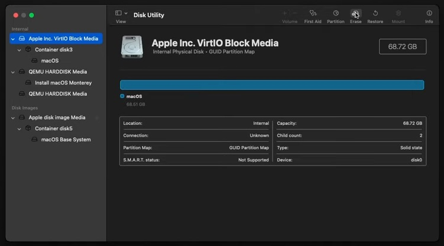
Lembre se que toda vez que o sistema reiniciar e voltar nessa tela, você deve selecionar a opção macOS Installer (como na imagem abaixo)
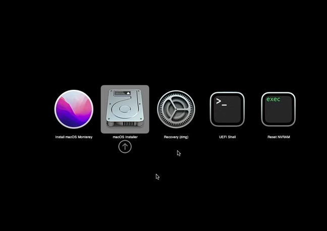Assim que o sistema finalizar a instalação e reiniciar, quando voltar para a tela inicial a opção macOS Installer vai mudar para macOS, selecione essa opção para continuar a instalação assim como na imagem abaixo:
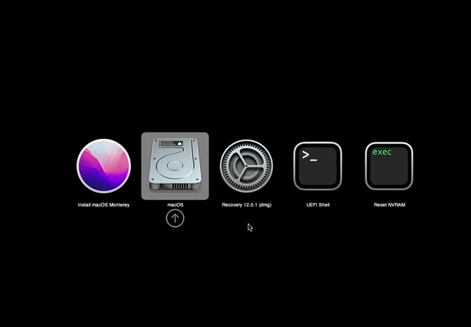Configure o sistema normalmente, se você nunca configurou o macOS antes você pode seguir como referência essa documentação aqui (siga do Configuração inicial do sistema até a identificação do esquema de teclado)
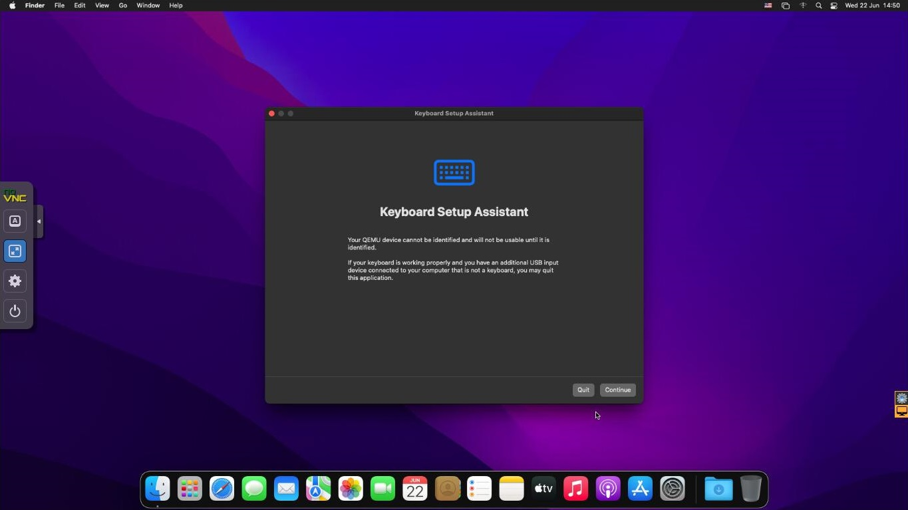Pronto! Com o sistema funcionando siga com a identificação do esquema de teclado.
Pós-instalação para o Proxmox
O MacOS está instalado na máquina virtual mas ainda não possui bootloader, ou seja, ainda não existe maneira de fazer com que o sistema inicialize o macOS sozinho ( portanto não deslique ou reinicie a máquina virtual para não ter dor de cabeça desnecessária). O processo aqui é idêntico ao descrito no tutorial do Hackintosh (Old Way) mas utiliza outros arquivos para o boot, então vamos resolver isso...
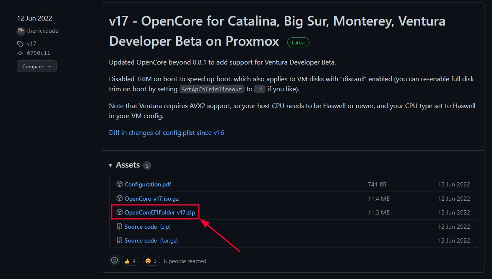Primeiramente acesse esse link aqui, baixe o OpenCoreEFIFolder-vXX.zip (como na imagem acima), extraia e copie a pasta EFI do arquivo recém extraído para a área de trabalho

Para acessar a partição EFI do computador utilizaremos o script MountEFI. Para isso acesse esse link e clique em Mount EFI Automator Quick Action.zip.
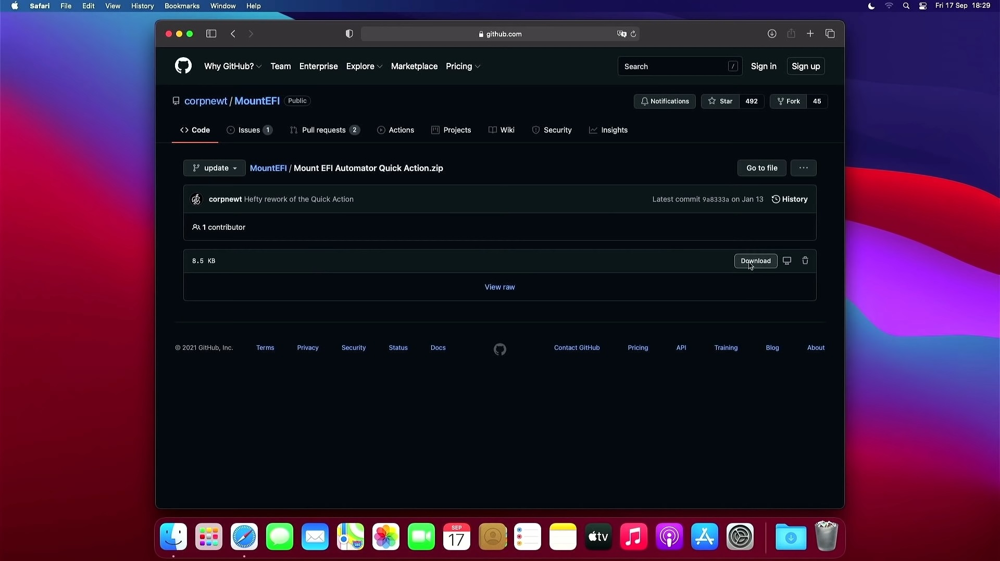Depois clique em Download
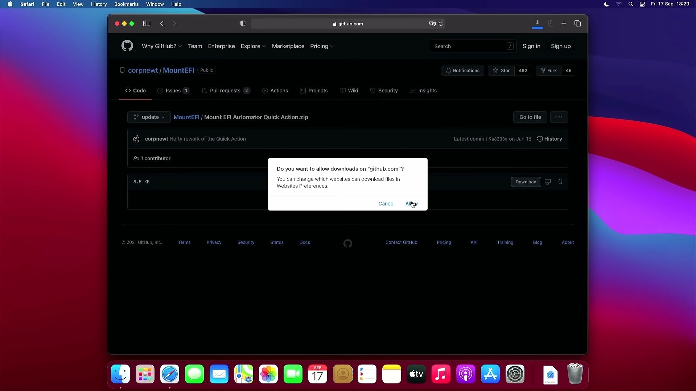Conceda acesso de downloads para o Github.
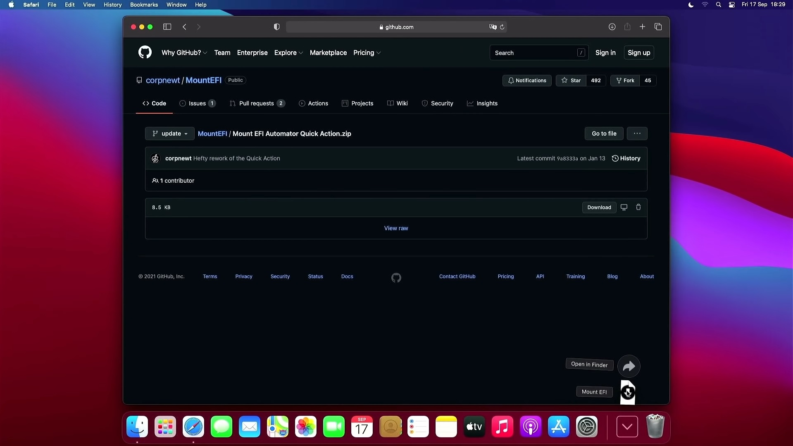Assim que o download finalizar clique na pasta de Downloads e abra o Mount EFI.
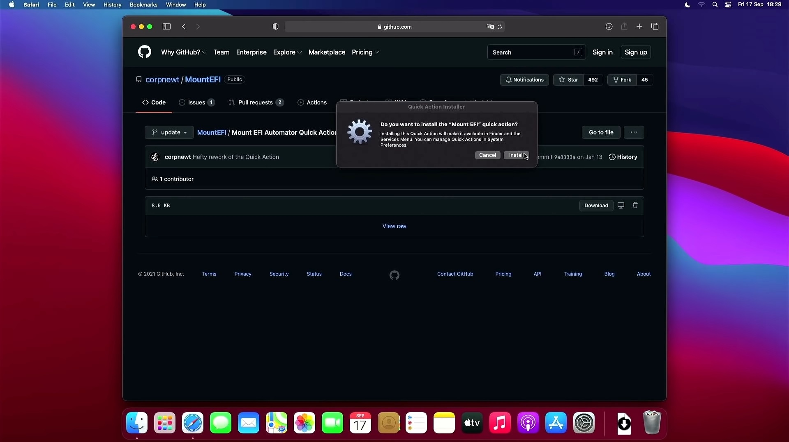O sistema vai perguntar se você deseja instalar o script, selecione Instalar.
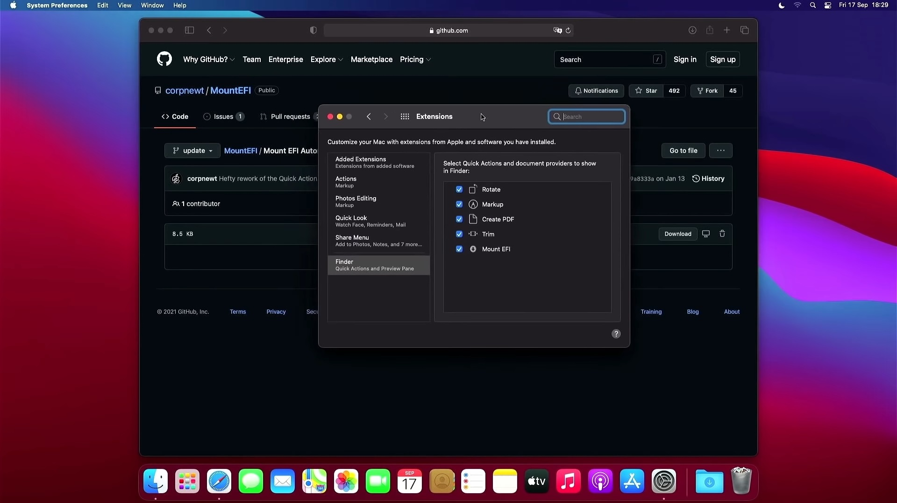O Mac provavelmente vai mostrar uma janela com os scripts instalados, você pode simplesmente fechar essa janela.
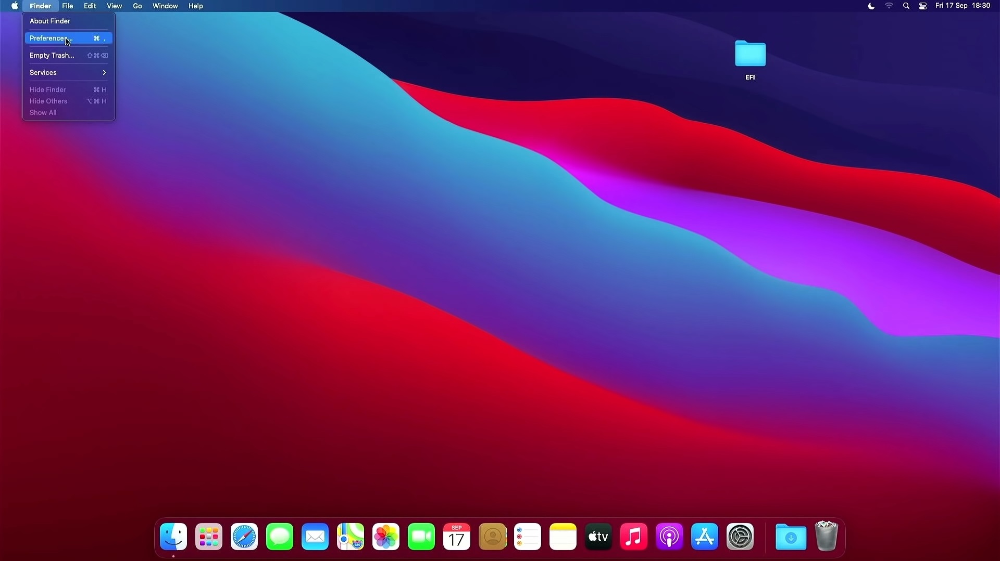Depois na barra de tarefas selecione o Finder no canto superior esquerdo da tela, e depois em Preferências.
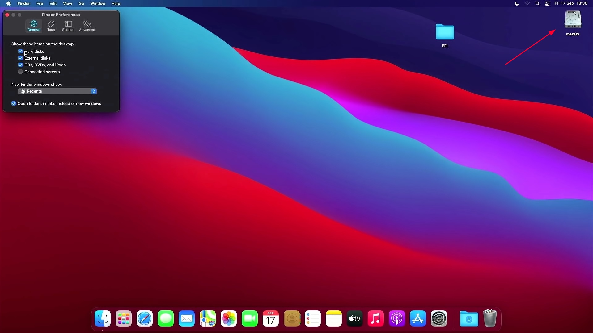Marque a opção Discos rígidos e então o ícone do HD vai aparecer na área de trabalho.
Clique com o botão direito no ícone do HD e selecione a opção Mount EFI, insira a senha para garantir a permissão.
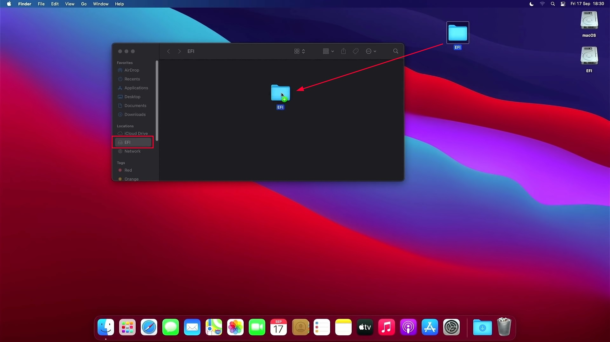Arraste a pasta EFI que você extraiu do arquivo OpenCoreEFIFolder-vXX.zip para a raiz da partição EFI do HD. Após isso, desligue a máquina virtual (através das opções do sistema operacional mesmo).
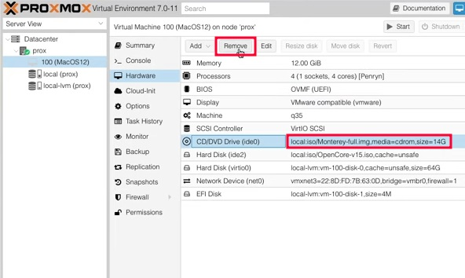Assim que a máquina virtual desligar, vá em Datacenter > PVE > MacOS e na opção Hardware selecione o CD/DVD Drive correspondente ao Monterey-full.img e na guia superior selerione Remove para remover a imagem de instalação já que não precisamos mais dela
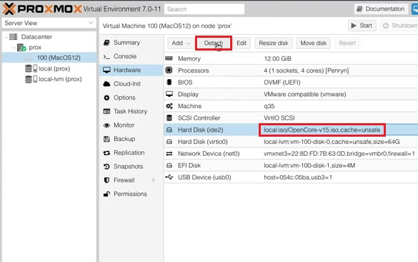Agora selecione o Hard Disk correspondente ao OpenCore-vXX.iso e na guia superior selerione Detach para remover a imagem de inicialização já que não precisamos mais dela
Agora dê Start e Console e verifique se o sistema vai iniciar corretamente
GPU Passthrough
Então você quer acessar o MacOS na mesma máquina em que instalou o servidor Proxmox? Se você tem uma placa de vídeo compatível com o MacOS é bem tranquilo de fazer.
Preparação da BIOS
A primeira coisa que você precisa fazer para habilitar o passthrough é configurar a bios corretamente, aqui vai uma lista simples do que você deve habilitar e desabilitar:
Habilite
- IOMMU
- AMD-Vi / Intel VT-d
- multi-monitor / multi-display
Desabilite
- CSM
Configuração do Proxmox
A primeira coisa que precisamos fazer para o nosso passthrough é configurar o grub, para isso edite o arquivo /etc/default/grub, e na linha:
GRUB_CMDLINE_LINUX_DEFAULT="quiet"
Agora devemos adicionar um comando para habilitar o iommu, porém varia conforme o seu processador, se o seu processador é AMD edite para que fique assim:
GRUB_CMDLINE_LINUX_DEFAULT="quiet amd_iommu=on"
Se o seu processador é Intel, edite para que fique assim:
GRUB_CMDLINE_LINUX_DEFAULT="quiet intel_iommu=on"
Salve o documento, e para atualizar o grub utilize o comando:
update-grub
Agora precisamos acrescentar alguns módulos ao Proxmox, para isso acesse /etc/modules e adicione as linhas:
vfio
vfio_iommu_type1
vfio_pci
vfio_virqfd
Salve o arquivo
Precisamos agora alterar o Remapeamento de interrupção IOMMU, para isso basta utilizar os comandos abaixo:
echo "options vfio_iommu_type1 allow_unsafe_interrupts=1" > /etc/modprobe.d/iommu_unsafe_interrupts.conf
echo "options kvm ignore_msrs=1" > /etc/modprobe.d/kvm.conf
Agora precisamos colocar os drivers de gpu na blacklist para que o Proxmox não utilize nossa gpu, para isso basta utilizar os comandos abaixo:
echo "blacklist radeon" >> /etc/modprobe.d/blacklist.conf
echo "blacklist nouveau" >> /etc/modprobe.d/blacklist.conf
echo "blacklist nvidia" >> /etc/modprobe.d/blacklist.conf
Agora precisamos passar a nossa gpu para passthrough, para isso liste as interfaces pci com o comando:
lspci -v
Vai retornar diversas linhas, mas basta procurar a linha da sua placa de vídeo que está mais ou menos assim (considerando por exemplo que você tenha uma GTX 1070):
01:00.0 VGA compatible controller: NVIDIA Corporation GP104 [GeForce GTX 1070] (rev a1) (prog-if 00 [VGA controller])
Se atente para o número do começo da linha, utilize o comando abaixo com esse mesmo identificador (claro, substituindo o identificador da linha para o da sua placa de vídeo)
lspci -n -s 01:00
E irá retornar o Vendor ID da sua gpu, mais ou menos assim:
01:00.0 0000: 10de:1b81 (rev a1)
01:00.1 0000: 10de:10f0 (rev a1)
O interessante para nós aqui são esses códigos de identificação de fornecedor: 10de:1b81 e 10de:10f0. Vamos adicionar esses IDs do fornecedor da GPU ao VFIO (lembre-se de substituir os ids pelos ids da sua gpu!):
echo "options vfio-pci ids=10de:1b81,10de:10f0 disable_vga=1"> /etc/modprobe.d/vfio.conf
Agora basta atualizar o initramfs com o comando:
update-initramfs -u
E resetar o sistema:
reset
Adicionar a GPU para a Máquina Virtual
Uma vez que o Proxmox já foi configurado para o passthrough falta apenas atrelar a GPU a máquina virtual do MacOS, para isso selecione Datacenter > PVE > MacOS e na guia Hardware selecione Add > PCI Device.
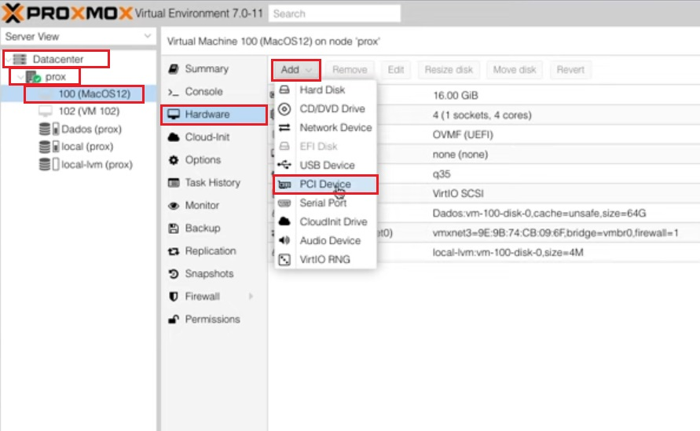No menu de Add: PCI Device, clique na guia de seleção em frente a Device: e selecione a sua GPU entre os itens dessa lista.
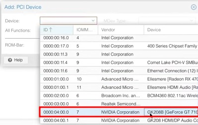Depois de ter selecionado a sua GPU marque as opções Primary GPU e PCI-Express, e por último clique no botão Add para confirmar a adição de dispositivo.

Lembre-se de confirmar que a opção de Display está como none (none).
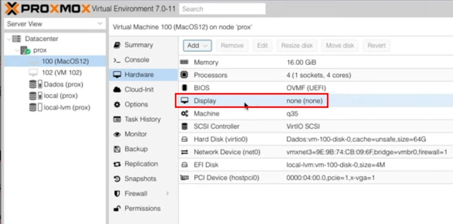Se você quiser que o sistema inicie automaticamente na máquina do Proxmox basta ir na guia Options e deixar a opção Start at boot como yes.
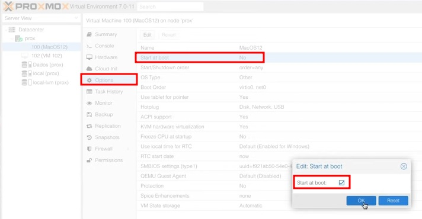Acessando a VM pelo próprio Proxmox
Embora eu não recomendo (a menos que seja para testes muito específicos), você pode simplesmente subir uma interface gráfica na máquina do Proxmox e um navegador e acessar as VM's assim como se tivesse fazendo de uma outra máquina em rede. Considerando que o sistema já está devidamente atualizado, instalaremos um Ambiente Gráfico, um Navegador e um Gerenciador de Display.
Nesse caso eu escolhi o LxQT para interface, o Firefox como navegador e o LightDM como gerenciador de display, fique a vontade para substituir o LightDM para Mate ou Firefox para Chromium MAS essa é a minha recomendação.
Lembrando: Essa parte foi feita considerando que você vai acessar diretamente as VM's pela máquina do Proxmox.
apt install lxqt firefox lightdm
Crie um novo usuário padrão com o comando:
adduser seunomedeusuário
Agora vamos ativar o serviço do LightDM para iniciar na inicialização com o comando:
systemctl start lightdm
Reinicie o sistema com:
reboot
Assim que o sistema reiniciar você verá o LightDM, use o seu usuário padrão para logar, abra o navegador e acesse a interface web do Promxox pelo endereço 127.0.0.1:8006 no navegador.